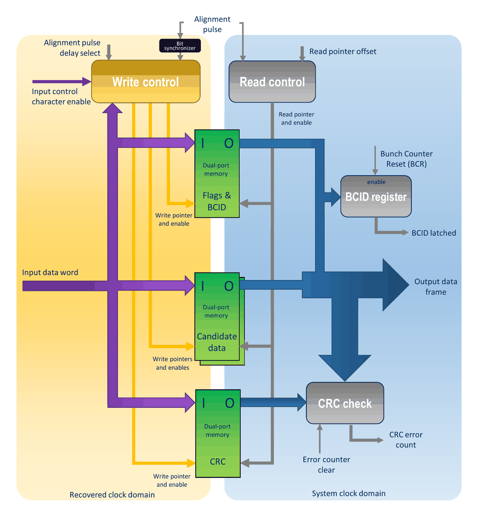

The upgraded muon interface of ATLAS (MUCTPI) receives 208 optical links from the muon sector logic, 104 in each of two FPGAs. Every link delivers one 128-bit frame per bunch crossing. Before any of it can be processed, all the frames from the same bunch crossing have to be present in the same clock domain, in the same clock cycle, after every reset and every power cycle. This post describes the block that does that.
What arrives
The links run at 6.4 Gb/s with 8b10b encoding. In the 25 ns of one bunch crossing, 160 bits are sent, which leaves 128 bits of payload: eight 16-bit words. The frame carries up to two muon candidates from a barrel (RPC) sector or four from an endcap (TGC) sector, global flags, a 12-bit bunch crossing identifier (BCID) and a CRC-8 over all of these. A control symbol (K29.7) marks the end of the trigger information, and the frame is padded with a comma symbol (K28.5) that the transceiver uses to find the word boundary.
The FPGA transceiver recovers a clock from each data stream and hands over 16-bit words on that clock, at 320 MHz, one word every 3.125 ns. The processing logic runs on the system clock at 160 MHz, with an enable flag every fourth cycle to mark the 25 ns bunch-crossing period.
Two unknowns
Sender and receiver use the same reference clock, so the frequencies match exactly. The phase does not.
The first unknown is the phase between each recovered clock and the system clock. Fibre lengths differ and components have part-to-part skew. I split this offset into two parts: a fraction of a bunch crossing, which I call synchronisation, and a whole number of bunch crossings, which I call alignment. Both are unknown, and both are constant as long as nobody changes the cabling.
The second unknown is not constant. As described in the post on transceiver latency, the receiver comes out of each reset with a latency that can differ by one recovered-clock period, 3.125 ns, in either direction. The block has to give the same output timing regardless.
Put together, the requirements fit on one slide. A synchronisation offset smaller than 25 ns that must tolerate 3.125 ns of uncertainty, an alignment offset that is a whole number of bunch crossings, and a guarantee that the result is the same after every reset.

Dual-port memories and two pointers
The design uses small dual-port memories, 32 words deep, written with the recovered clock and read with the system clock. The candidate words go into two memories for a barrel input or four for an endcap input. Two more hold the flags with the BCID, and the CRC. Reading all of them at the same address returns a complete frame in the system clock domain.

Everything depends on the two address pointers. A single alignment pulse, generated in the system clock domain, starts both. On the read side it loads a configurable offset into the read pointer, which then advances every 25 ns. On the write side the pulse first crosses into the recovered clock domain through a two-register synchroniser, with both registers constrained to the same FPGA slice. After that, the write pointer starts from zero and advances once per frame, each time the last word of a frame is received.
The frame-border problem
Suppose the alignment pulse arrives just before the last word of a frame. The write pointer starts with that frame. After the next reset the receiver latency is one period longer, the same pulse arrives just after that word, and the write pointer starts one frame later. The data is intact, but every frame now sits one address away from where it was, and the output is off by one bunch crossing. In simulation this shows up as a wrong BCID with a correct CRC.
The tolerance to latency variation on the write side is one full frame period. It cannot be made longer, but it can be centred. The write control can delay the alignment pulse in eight steps of 3.125 ns, which covers the whole frame. Putting the pulse in the middle of the frame leaves the same margin on both sides.
Calibration, once
The block has two monitors on the read side. A register latches the BCID of the output frame each time the bunch counter reset arrives, once per LHC orbit. A CRC check recomputes the CRC-8 and counts mismatches. The two see different faults. A CRC error means that the memories returned pieces of two different frames, because reading and writing overlapped. A wrong BCID with a good CRC means a whole, valid frame from the wrong bunch crossing.
The write-side calibration steps through the eight alignment delays and reads the latched BCID for each. At one of the steps the BCID changes: that is where the pulse crosses the frame border. The delay diametrically opposite to it puts the pulse at the frame centre, and that value is stored.
The read-side calibration scans the read pointer offset. Read too early and the frame is not completely written yet. Read too late and the next cycle through the memory has started to overwrite it. Between these limits there is a range of error-free offsets, from minimum latency to maximum latency. Stepping through that range moves the output by whole bunch crossings, which is how alignment between inputs is done. For the lowest latency one takes the earliest offset that still leaves room for the receiver to be one period late.
Both values are found once per input and loaded as fixed parameters from then on.
Simulation before hardware
The test bench is written in Python with Cocotb, driving ModelSim. The simulation swept the phase at calibration over the whole bunch crossing, and for each value swept the phase at running time around it. For some tests I went far beyond the real uncertainty, up to eight recovered-clock periods on each side, to see where the errors begin and how much margin there is.
The calibration procedure was worked out here. The simulation also gave the latency of the block itself, measured from the end-of-frame word entering the memory to the complete frame leaving it: between 3.125 ns and 34.2 ns in the minimum-latency setting, depending on where the input phase happens to fall.
The results are easiest to read as a map. In the figure below, the vertical axis is the phase of the input when the calibration was done, over a whole bunch crossing. The horizontal axis is the phase at running time, swept far beyond the real uncertainty to ±25 ns. Black means BCID errors, grey means error-free. Before calibration, the error-free band is not centred on the operating point, so a small shift in one direction already gives errors. After the one-time calibration, the operating point sits in the middle of the band for every possible input phase. The thin blue lines show the real uncertainty of 3.125 ns, well inside it.

On the bench
Integration tests with prototypes of the barrel and endcap sector logic used up to 12 links. Both ends raised a flag when the frame with BCID 0 passed, and an oscilloscope measured the distance between the flags. After correcting for fibres and cables, the total from the sender's 40 MHz logic to the MUCTPI system clock was about 109 ns for the barrel input and about 112 ns for the endcap input, between four and five bunch crossings, within the range predicted by the simulation and inside the MUCTPI budget of 200 ns.
The phase between the two flags did not move after resetting and power cycling both systems. The CRC error counters stayed at zero after repeated resets and over an overnight run.

Notes for a similar design
The 3.125 ns of receiver uncertainty could have been removed inside the transceiver, at the cost of modifying the vendor's IP. Absorbing it here was simpler, and the simulation showed that the block tolerates more variation than the links produce. The other thing I would repeat is to build the monitors, BCID and CRC, into the block from the start. They are what makes a one-time calibration possible.